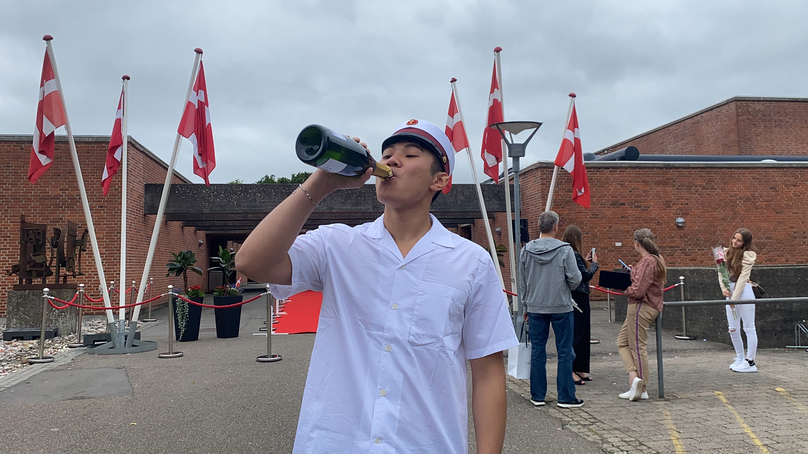
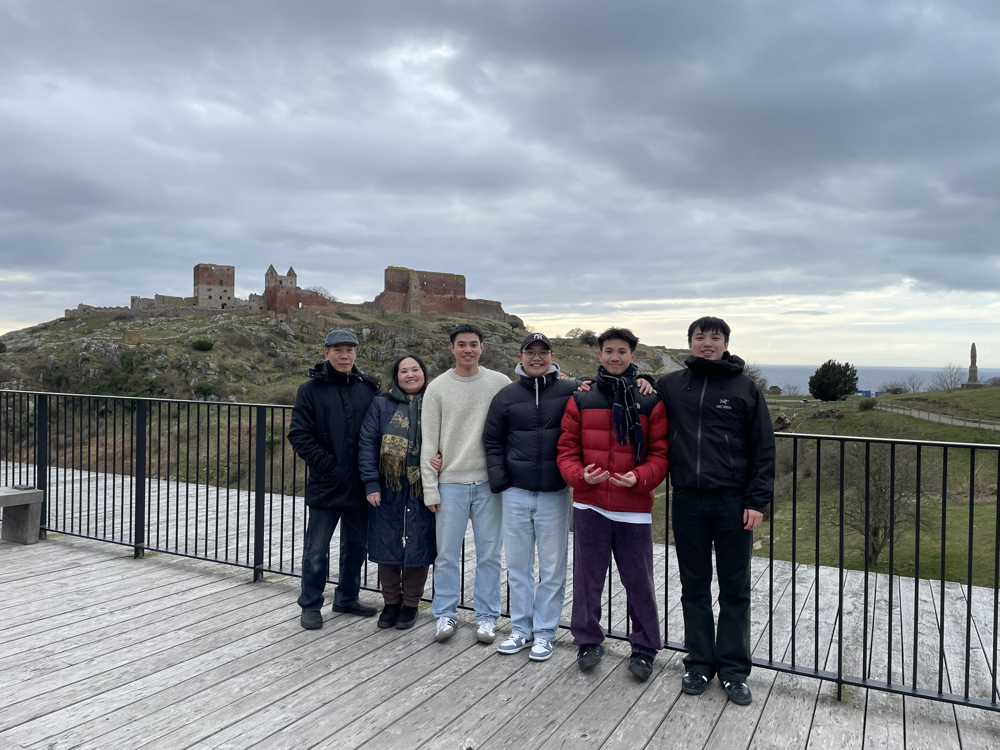
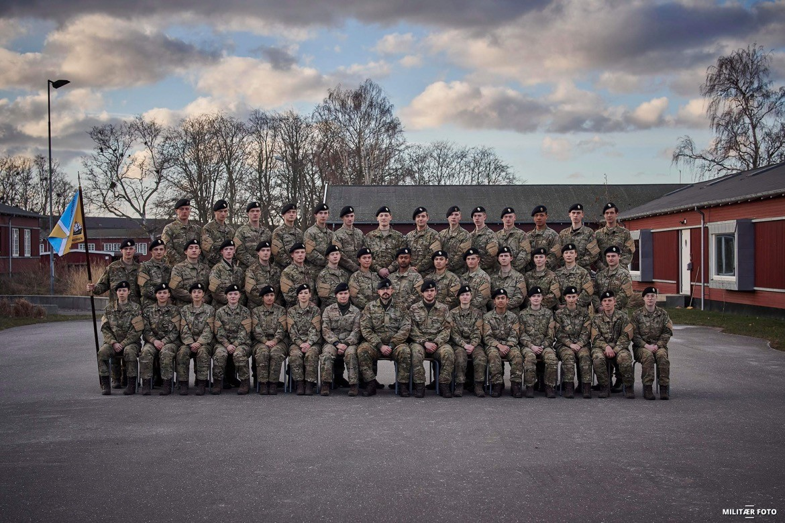
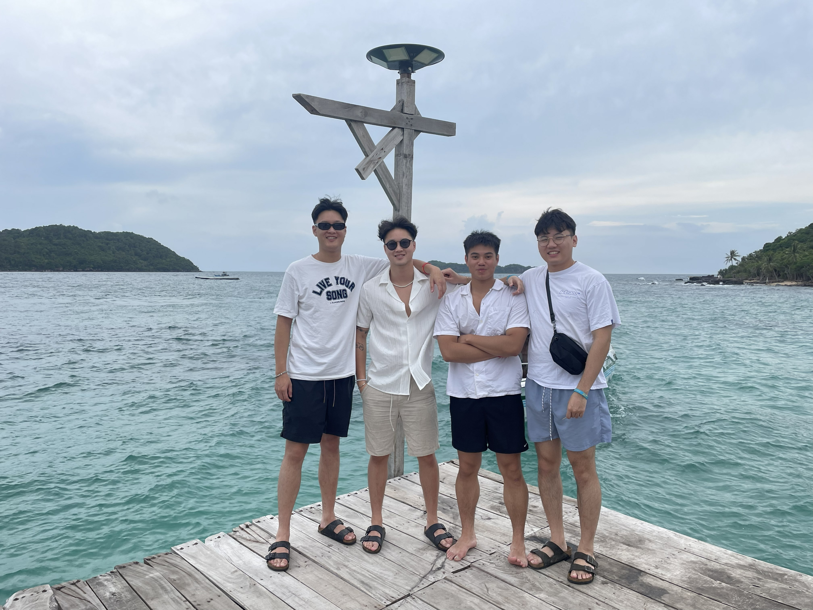

My Story
I am 23 years old, from Haderslev, but now live in Odense studying Computer Science at South Denmark University (SDU). I have 3 brothers, 1 younger and 2 older. My parents are from Vietnam, but we all grew up in Denmark. We started in a small apartment in Varbergparken, then my parents saved enough to buy a house at Ejsbølvænge — a lovely neighbourhood.
I had a health condition called epilepsy and spent some time in hospital, which is why I got held back a year in school. Luckily, miraculously, I got better and the disease went away.
I was 17 when I started at Haderslev Katedralskole. I took STX — mostly because of my friends, but also because both older brothers went that route. Three years of new friends, memories and experiences. I graduated with a 6.2 average.

On the 1st of February 2023 I entered the military to serve my conscription in Bornholm — a small island between Denmark and Sweden. Almost 7 hours of travel from Haderslev: bus, train to Copenhagen, bus to Ystad in Sweden, then a ferry. I chose Bornholm because I heard it was one of the toughest places to serve and I like a challenge.
The unit was 3. Opklaringsbataljon (III/GHR) under Gardehusarregimentet — now its own Bornholm Regiment. Four months: two green (field/shooting), two blue (security & admin).

I learned discipline, emotional control, how to live with others, and pushed myself to the absolute limit. Got new friends and a lot of respect for different kinds of people.

After my conscription I saved up before going on a vacation to Vietnam with my cousins and friends.

And I got my first tattoo.
I started studying Computer Science at SDU Odense in 2024 — winter start. Stayed at my brother's place for almost 4 months before getting my own flat. Now I live at Grønløkkevej 38. Life is good.